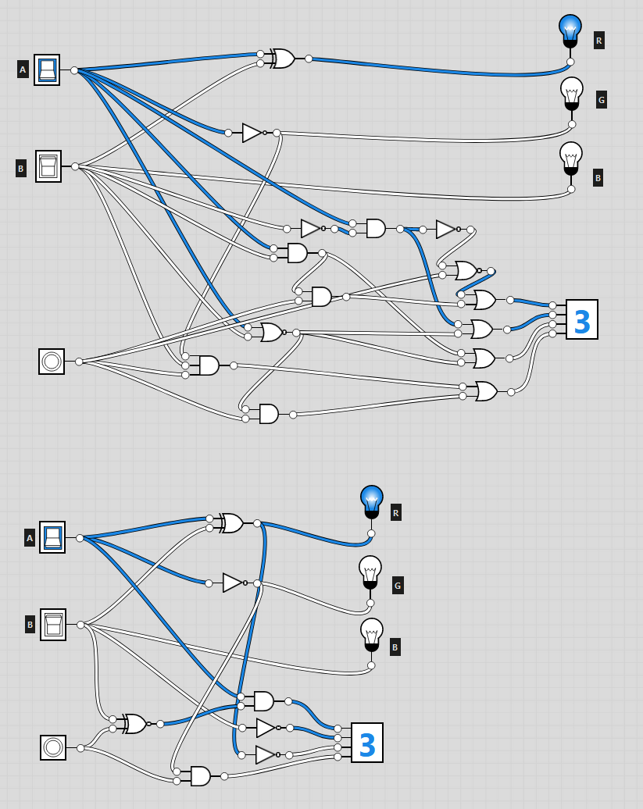

Over the past few weeks, I've been learning about Boolean logic, binary, and other number systems. I've
tackled numerous questions on these topics, which has helped me gain a deeper understanding of them.
I started by completing 1.1, which was all about An Introduction to Boolean Logic. I learned about
logical operators and how to represent them with logic tables. Logic tables are handy for comprehending
the functionality of each logical operator. Logic tables are also an excellent way to solve problems
that include logical operators. The questions in 1.1 were focused on converting certain logical
operators into logic tables.
Upon finishing the initial set of questions in 1.1, I moved on to the following assigned questions within
2.1. 2.1 is quite similar to 1.1 as it also revolves around logic gates. 2.1 explained a different way
to show logic gates as more of a visual style using the website logic.ly. The tasks assigned in 2.1
required creating and designing multiple logic gates using the logic.ly website.
After completing all the base questions on logic gates I moved on to the extension question. The
extension question was the hardest, requiring previous knowledge learnt from the earlier questions and
combining them to complete the task. The extension question gave me a new view of Boolean logic, and I
had to break it down and complete the challenge in several parts. At first, I did not try to break it
down, resulting in confusion and frustration. When I broke the task into smaller tasks, I found it much
easier and eventually completed it.

I was pretty happy with my solution, but I discovered there was a more straightforward answer to the
problem, and it was possible to complete with only seven gates instead of the 15 I initially used.
Completing the question with only seven gates was possible with a different way of thinking.
The last assigned document for the first few weeks was on a different topic. This topic was on Number
Systems. Decimal is the Number System that people use to count with ten digits, and there are other
systems like binary, octal, and hexadecimal. Binary is the numerical system predominantly used within
computers, consisting of only two digits - 0 and 1. These digits can be represented by electronic
switches that are either turned "on" or "off". The base of how computers work lies in this binary
system. This document contains tasks that involve converting values from one number system to another.
These last few weeks, I have developed my problem-solving skills, expressly regarding logic gates. When I
face complex problems, like the extension question, I find it helpful to break them down into smaller,
more manageable parts. This approach allows me to tackle each small problem effectively by ensuring that
every part works together seamlessly.
The digital technology course has surrounded itself with self-learning; I enjoyed this way of learning as
it allows me to work at my pace while pushing myself to do my best. I found that I pushed myself when it
came to the extension question. When I discovered I had completed the question, but it was not the best
answer, I restarted and broke down the problem differently instead of just leaving it.